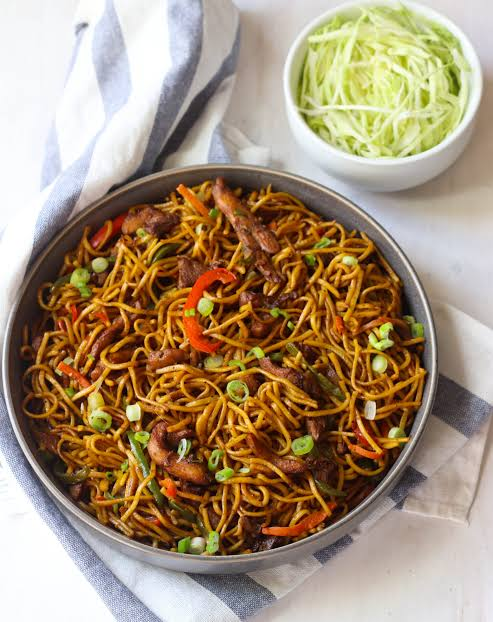

CHOWMEIN
Home

Description
It is famous nepali Cuisine Chowmein widely popular in Asia continent.
- 200g stir-fry noodles
- Water: 4 cups for boiling
- Cooking oil: 2 tbsp
- Vegetables/Protein: Shredded cabbage, carrot, capsicum, onion, and chicken/buff
- Sauces & Spices: Soy sauce, chili sauce, tomato ketchup, and chowmein masala
- Boil noodles in salted water until soft and drain thoroughly
- Heat oil in a wok or large pan over high heat
- Sauté chopped garlic, onions, and sliced vegetables or meat
- Add boiled noodles along with soy sauce and spices
- Stir-fry everything rapidly on high heat for 3 to 5 minutes
- Garnish with fresh green onions and serve hot